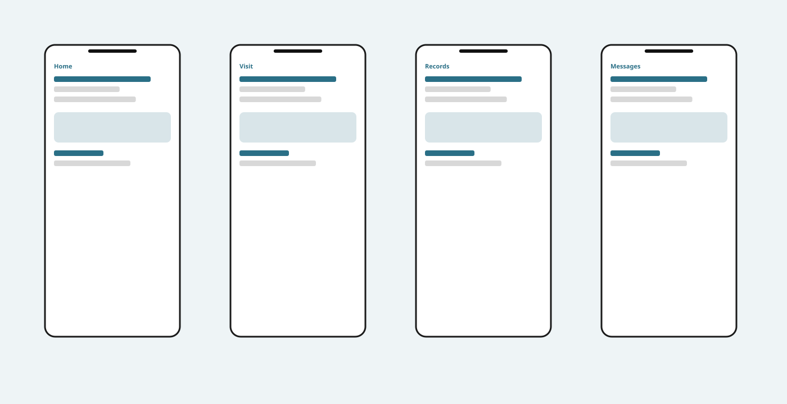

Product design · 2023
Lack of imagery — the work is told in words, with almost no screens to look at.
Helping patients book visits, read results, and message their care team without feeling lost in the system.
This was a patient portal for a regional healthcare network. Members could already log in, but most still called the front desk to book a visit or ask what a lab result meant. Leadership wanted more of that activity to happen in the product so staff could spend time on care instead of phone tag. I joined as the product designer, sitting with a PM, a researcher, three engineers, and a clinician who reviewed anything that touched medical language.
Success, for the business, was fewer inbound calls about scheduling and results. Success for patients was being able to finish a booking, understand a result, and send a message without guessing which menu hid the thing they needed.
The existing portal was organized around internal departments — billing, records, referrals — not around the jobs people actually had. Booking a follow-up required knowing which clinic to pick before picking a date. Lab results arrived as PDFs with no explanation of what “in range” meant. Messaging lived in a separate inbox that didn’t show which visit a thread belonged to.
We heard the same pattern in interviews: people opened the portal with one task, bounced between sections, and gave up. Sarah, 28, a busy professional with a recurring prescription, described logging in on her lunch break, failing to find a refill status, and calling instead. That 12-minute call was the design problem. It wasn’t that patients disliked digital care. It was that the product asked them to think like the organization.
We interviewed 11 patients and 6 clinic staff, and reviewed two weeks of call-center tags. The top three reasons for calling were scheduling (38%), “what does this result mean” (24%), and prescription status (17%). Staff confirmed they spent a large part of the morning walking people through things that already existed in the portal — they just couldn’t be found.
Two insights changed the work. First, patients don’t start with a department; they start with a next step (“I need to see someone about this result”). Second, trust is fragile around health data: if a number appears without context, people assume something is wrong. That told us a results screen couldn’t just be a file list. It needed a plain-language status, a date, and a way to ask a follow-up without leaving the page.
We restructured the home screen around three actions — Book, Results, Messages — instead of nine department links. That was a trade-off: billing and referrals became one extra tap, which finance disliked, but those tasks were far less frequent. We argued for the cut using the call data, and shipped the simpler home.
Booking used to start with “choose a clinic.” We flipped it to “what do you need?” (checkup, follow-up, new concern) and inferred clinic from the patient’s last visit and insurance. Engineers warned that inference would fail for new patients, so we kept an explicit clinic picker as a fallback, not a first step. We dropped a calendar-grid exploration because it looked familiar but made multi-provider availability unreadable on a phone. The version we shipped is a list of next available slots, grouped by day, with a filter for “this week” versus “any time.”
For results, we designed a card per test: name, date, a three-state label (typical / needs review / action required), and a short clinician-approved sentence. We considered hiding numbers entirely for “typical” results to reduce anxiety, but the clinician advisor pushed back — some patients want the figure. The compromise was to show the number in secondary type under the plain-language label, with a “ask about this” action that pre-fills a message to the care team.
Messaging was attached to the visit or result it belonged to, with a general inbox still available. We didn’t have time to rebuild the entire thread system, so we used deep links into the existing inbox rather than a new compose surface. Not elegant, but it meant a patient looking at a cholesterol result could start a question without hunting.
Home is a short greeting, the next appointment if there is one, and the three primary actions. Book is a two-step flow: need, then a list of times. Confirmation repeats the time, location, and a note about arriving 10 minutes early. Results is a chronological list of cards; tapping one opens the explanation, the number, and the ask action. Messages shows threads grouped by clinic, with the related visit titled in the preview so people don’t open the wrong conversation.
Empty states were written as instructions, not decoration: “No results yet — they usually appear within 3 days of a lab visit.” Error states offer a phone number for the clinic, because a failed booking in healthcare shouldn’t dead-end.

[Image: home, visit booking, records, and messages]
In the first eight weeks after launch, calls tagged “scheduling” dropped 22% compared with the prior quarter, and “results questions” dropped 18%. Time on the booking flow in analytics went down (people finished faster), while completion rate went up from 41% to 67%. The message deep-link from results became the third most-used entry point into the inbox.
What I would still change: new patients still hit the clinic fallback too often, and we never designed a good way to handle multiple open referrals. Those are the next two tickets. The work I’m proudest of isn’t the visual system — it’s that the portal now starts from the patient’s next step instead of the org chart.